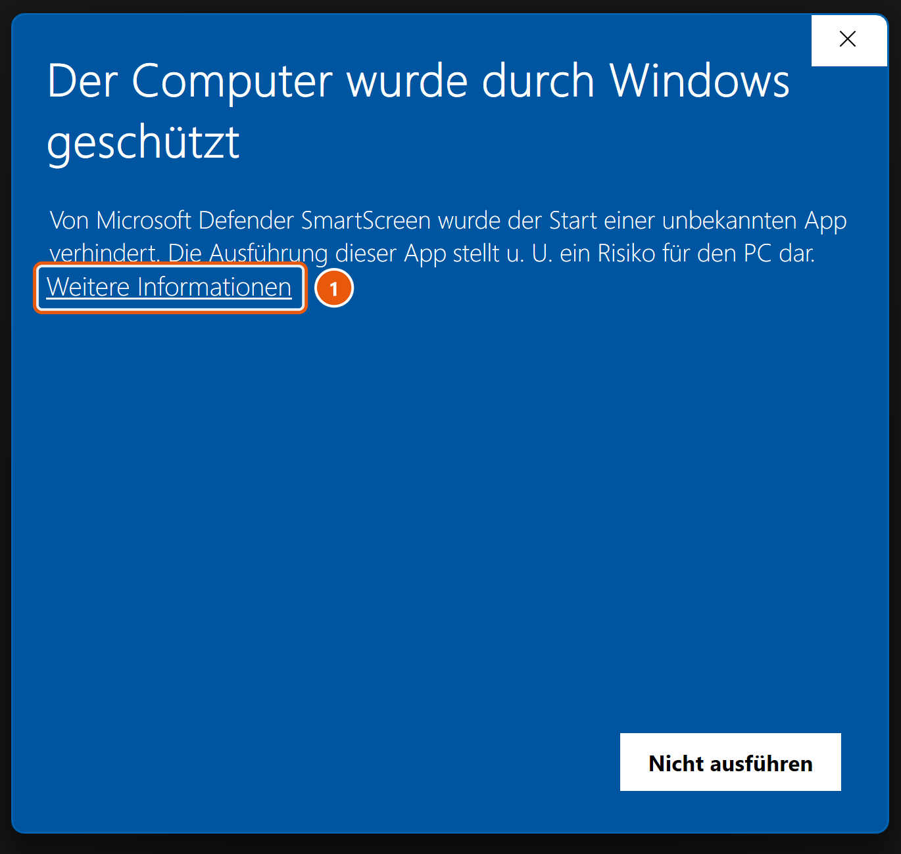
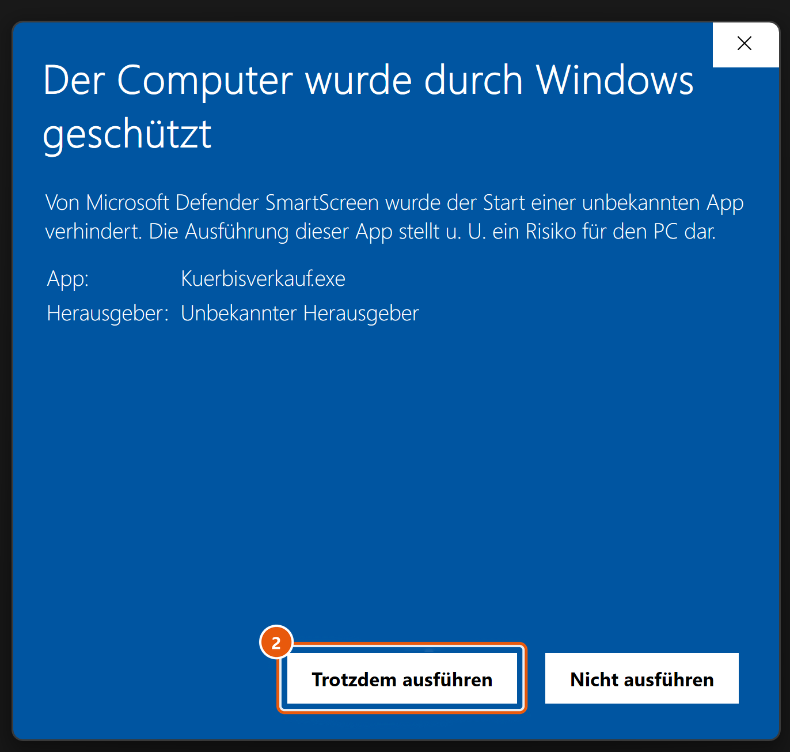
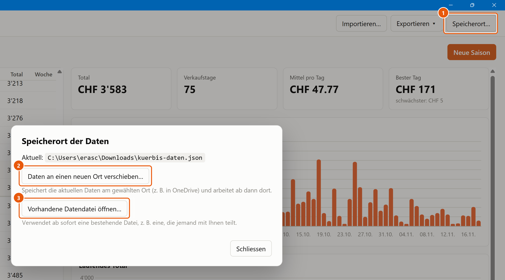

Anleitung für die erste Benutzung
Die Einnahmen aus dem Kürbisverkauf wurden seit 1998 in einer Excel-Datei
(Kürbissverkauf 1998-2025.xlsx) festgehalten: pro Jahr ein Blatt, jeden Tag ein Betrag,
dazu Wochen- und Jahrestotale sowie ein Übersichtsblatt. Das funktioniert, ist aber aufwändig:
Jedes Jahr muss ein neues Blatt angelegt, Formeln kopiert und die Übersicht nachgeführt werden –
und ein Vergleich über viele Jahre ist mühsam.
Das Programm Kürbisverkauf ersetzt diese Excel-Datei:
Kuerbisverkauf.exe herunterladen.Dokumente\Kürbisverkauf. Eine Installation ist nicht nötig. Das Programm braucht Windows 10 oder 11.
Beim ersten Doppelklick auf Kuerbisverkauf.exe zeigt Windows eine blaue Meldung
«Der Computer wurde durch Windows geschützt».
Microsoft Defender SmartScreen warnt bei jedem Programm aus dem Internet, das Windows noch nicht kennt. Grosse Softwarefirmen kaufen dafür ein Zertifikat, mit dem ihre Programme «signiert» sind. Das Kürbisverkauf-Programm ist ein kleines, selbst geschriebenes Programm ohne solches Zertifikat – darum steht dort «Unbekannter Herausgeber». Die Meldung sagt also nicht, dass das Programm gefährlich ist, sondern nur, dass Windows es nicht kennt.
github.com/eraschle/kuerbis-verkauf) heruntergeladen wurde und Kuerbisverkauf.exe heisst.Auf den unterstrichenen Text Weitere Informationen klicken. Nicht ausführen würde den Start abbrechen.

Jetzt erscheinen der Name der App (Kuerbisverkauf.exe) und der Herausgeber. Mit
Trotzdem ausführen startet das Programm.

Diese Meldung kommt nur beim ersten Start. Danach startet das Programm ohne Rückfrage. Wird später eine neuere Version heruntergeladen, erscheint die Meldung für diese neue Datei einmal wieder.
Beim allerersten Start ist das Programm leer. So kommen die bisherigen Zahlen hinein:
Kürbissverkauf 1998-2025.xlsx auswählen.Danach sind alle Jahre im Programm und werden automatisch gespeichert. Die Excel-Datei selbst wird nicht verändert.
12,50 oder 12.50).| Reiter | Was er zeigt |
|---|---|
| Vergleich | Das laufende Total mehrerer Jahre übereinander, ausgerichtet nach Kalenderwoche und Wochentag. Die graue Fläche zeigt den Bereich zwischen dem schwächsten und dem stärksten Jahr. Untypische Jahre lassen sich unter MIN/MAX-Jahre… ausnehmen. Darunter das Jahrestotal pro Jahr. |
| Übersicht | Statistik pro Jahr (Min, Max, Mittel, Tage, Total) und die Wochentotale aller Jahre als Tabelle – wie das frühere Blatt «Üb» in Excel. |
Das Programm arbeitet mit einer einzigen Datendatei: kuerbis-daten.json.
Darin stehen alle Jahre und Beträge. JSON ist ein einfaches Textformat, das das Programm schnell und
zuverlässig lesen und schreiben kann.
| Datei | Wozu |
|---|---|
kuerbis-daten.json | Die eigentlichen Daten. Wird bei jeder Eingabe automatisch gespeichert.
Standardmässig im selben Ordner wie Kuerbisverkauf.exe. |
kuerbis-daten.json.bak | Sicherheitskopie: der Stand vor der letzten Speicherung. Liegt daneben und wird automatisch nachgeführt. |
Excel-Datei (.xlsx) | Nur für Import und Export. Das Programm speichert nicht laufend in Excel, kann aber jederzeit eine Excel-Datei erzeugen (Exportieren → Als Excel), die jede Person ohne das Programm öffnen kann. |
JSON-Export (.json) | Exakte Kopie aller Daten – ideal als Backup oder zum Weitergeben an jemanden, der das Programm ebenfalls benutzt. |
Der aktuell verwendete Speicherort steht immer unten links im Programmfenster (Daten: …).
Die Wahl des Speicherorts selbst merkt sich das Programm unter
%APPDATA%\Kuerbisverkauf\einstellungen.json.
Oben rechts auf Speicherort… klicken ①. Es öffnet sich der Dialog Speicherort der Daten mit dem aktuellen Pfad und zwei Möglichkeiten:

Speichert die aktuellen Daten am gewählten Ort und arbeitet ab dann dort weiter – z. B. in einem OneDrive-Ordner, damit die Daten automatisch gesichert sind. Liegt am Ziel bereits eine Datendatei, fragt das Programm nach, ob sie überschrieben oder stattdessen geöffnet werden soll.
Verwendet ab sofort eine bestehende .json-Datendatei, z. B. eine, die jemand in einem
gemeinsamen Ordner teilt, oder die Datei nach einem Wechsel auf einen neuen Computer. Die bisher geöffnete Datei bleibt
unverändert an ihrem Ort.
Mit Schliessen den Dialog verlassen. Der neue Speicherort gilt auch bei allen weiteren Starts.
kuerbis-daten.json; ändern unter Speicherort….